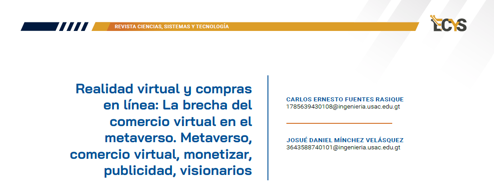

14 Realidad virtual y compras en línea: La brecha del comercio virtual en el metaverso. Metaverso, comercio virtual, monetizar, publicidad, visionarios {#4.2 }

14.1 Artículo
Durante muchos años, el mundo ha sido testigo de la comercialización constante de muchos productos. Si nos detenemos a reflexionar sobre cada acción de nuestra vida, cada momento y elección, nos damos cuenta de que todo constituye un intercambio. Desde que nos despertamos, nos vemos inmersos en el intercambio de tiempo para realizar nuestras actividades diarias.
En cada instancia, surge la necesidad de cambiar recursos que tenemos al alcance por otros, es así, que nos percatamos de que somos comerciantes innatos, desde nuestro nacimiento. Es por eso por lo que el ser humano busca adaptarse a las nuevas formas de comerciar e intercambiar bienes, así nace el comercio virtual y el metaverso.
Figura 14.1: Realidad virtual
El comercio virtual no es una novedad; de hecho, la mayoría ha vendido algo por internet o ha experimentado intentos de venta. No obstante, todos sabemos que esta modalidad representa una herramienta increíble, y el mundo sigue avanzando constantemente en tecnología. Aquí entra en juego la realidad virtual y el metaverso.
¿Alguna vez te has preguntado por qué Facebook cambió su nombre a Meta? Permíteme contarte: la razón es la misma por la que desarrollamos este artículo. Facebook identificó la brecha en el ámbito de la realidad virtual y realizó una apuesta total por el mundo virtual. La visión de Meta consiste en crear un mundo virtual que forme parte integral de la red social, donde las interacciones trasciendan la pantalla, generando un nivel de conciencia tan real como el mundo físico. Con la iniciativa de la realidad virtual, grandes visionarios como Meta, claramente uno de sus grandes objetivos es monetizar los recursos obtenidos a través de las interacciones en su metaverso. Sorprendentemente, esto guarda una similitud casi idéntica con la situación actual.
No es ningún secreto que, al hablar con alguien sobre un producto o necesidad, nuestras redes sociales se llenan rápidamente de publicidad relacionada en cuestión de horas. Ahora, imagina trasladar esas mismas conversaciones al metaverso. Te preguntarás: ¿Cuál es la diferencia? En el metaverso aparte de la información que trasmitimos verbalmente, obtendrán gestos, sentimientos/emociones, seguramente podamos dibujar cómo queremos el artículo y toda esa información será grabada, lista para venderla al mejor postor.
La pandemia del COVID-19 tuvo un gran impacto con el desarrollo de la realidad virtual, tanto que ahora en pleno 2024, se encuentra a la venta una diversidad de dispositivos como las gafas de realidad virtual, que ha pasado de ser una curiosidad tecnológica a una herramienta indispensable para el comercio en línea. Estas gafas permiten a los usuarios explorar tiendas virtuales, interactuar con productos y tomar decisiones sin salir de casa, impulsando así un cambio significativo en la forma en que conocemos el comercio.
Aunque en la actualidad existe una variedad de productos para realizar compras con realidad virtual, hay productos populares como son las gafas Meta Quest. La experiencia del usuario es impresionante a un precio razonable. Una frase de estos productos Meta Quest 2 es: “Explora la realidad virtual en una plataforma de confianza que cuenta con funciones de privacidad mejoradas que cifran tus datos y herramientas de supervisión que garantizan que el contenido sea siempre adecuado para toda la familia.” (Meta 2024)
En el contexto de Guatemala, un país rico en cultura y tradición, la realidad virtual ofrece oportunidades únicas de impulsar productos locales a una escala internacional. Algunos ejemplos de productos nacionales que son populares podemos mencionar: Trajes típicos, máscaras ceremoniales, joyería de jade, artículos de cuero, artesanías típicas, entre otros. La virtualidad permite a los comerciantes guatemaltecos expandir su alcance más allá de las fronteras físicas, capitalizando así la creciente demanda de experiencias auténticas y culturalmente enriquecedoras que se puede lograr con la realidad virtual.
Figura 14.2: Experiencia de usuario en compras utilizando realidad virtual.
Aunque la realidad virtual ha acaparado la atención de las personas, no podemos dejar pasar por alto el potencial de la realidad aumentada. A diferencia de la realidad virtual, esta consiste en sitios artificiales que utilizan videos e imágenes para permitir a los clientes tener la sensación de que están en una tienda real. Al ofrecer experiencias inmersas sin la necesidad de adquirir hardware especializado, la realidad aumentada permite una gama de consumidores a participar de esta nueva era de comercio digital.
Hoy en día, en Guatemala existen tiendas que ofrecen servicios de realidad aumentada. A continuación, se presenta un fragmento promocional:
“La nueva tienda de La Curacao, es la primera tienda premium de la cadena en Guatemala. Somos los primeros en presentar la propuesta de compra con Realidad Aumentada.” (comercial 2023).
14.2 Conclusiones
La comercialización constante de productos ha sido testigo de una evolución notable, donde el comercio virtual y el metaverso surgen como protagonistas. Desde la reflexión sobre nuestras interacciones cotidianas hasta el cambio de paradigma con empresas líderes como Meta, se revela un panorama donde la realidad virtual y la monetización de interacciones adquieren un papel esencial. La pandemia del COVID-19 ha acelerado la adopción de tecnologías como la realidad virtual, evidenciado por la diversidad de productos virtuales disponibles, transformando la experiencia de compra y abriendo oportunidades internacionales, como los artículos guatemaltecos. En este contexto innovador, la interconexión virtual promete una revolución que redefine la relación entre individuos y la tecnología, marcando un hito en la convergencia de mundos digitales y físicos.
14.3 Referencias
[1] comercial, Redacción. soy502. 11 de Diciembre de 2023. https://www.soy502.com/articulo/curacao-inaugura-tienda-premiumoakland-place- 101337.
[2] Computer Hoy. Computer Hoy. 26 de Marzo de 2023. https://computerhoy.com/noticias/tecnologia/hoja-ruta-metarealidad-virtual- metaverso-1054581 (último acceso: 29 de Enero de 2024).
[3] Meta. Meta. 31 de Enero de 2024. https://www.meta.com/es/quest/products/quest-2/.
[4] Meta Platforms. Meta. 20 de Enero de 2024. https://about.meta.com/ltam/metaverse/ (último acceso: 29 de Enero de 2024).